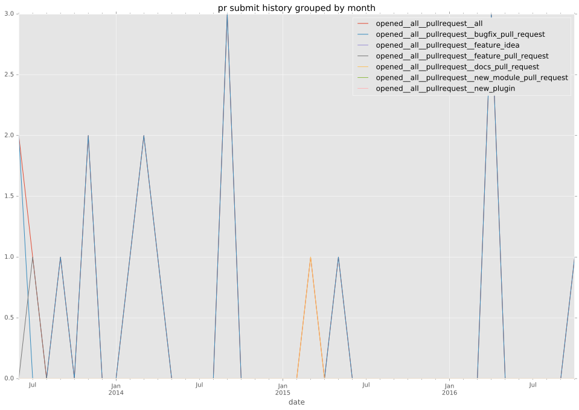
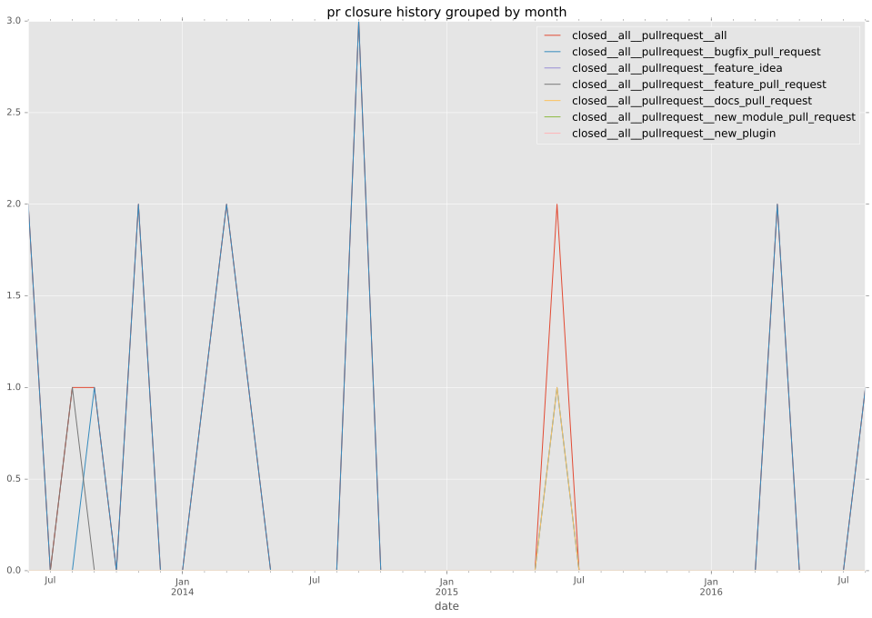

total issue counts
bugfix pull request: 18
pullrequest: 21
docs pull request: 1
feature pull request: 2
issue: 2
bug report: 2
issue history
pullrequest history


days open by issue type
feature pull request
count: 2
std: 8.48528137424
min: 3
max: 15
median: 9.0
mean: 9.0
all
count: 29
std: 44.1504369598
min: 0
max: 181
median: 2.0
mean: 21.2413793103
pullrequest
count: 0
std: nan
min: nan
max: nan
median: nan
mean: nan
docs pull request
count: 2
std: 0.0
min: 78
max: 78
median: 78.0
mean: 78.0
bugfix pull request
count: 24
std: 29.2386172575
min: 0
max: 105
median: 0.0
mean: 10.875
issue
count: 0
std: nan
min: nan
max: nan
median: nan
mean: nan
bug report
count: 1
std: nan
min: 181
max: 181
median: 181.0
mean: 181.0
closures grouped by total days open